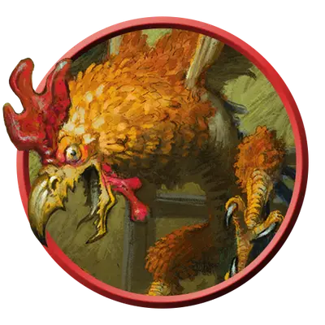

Королевский куролиск
Cockatrice Regent
Большое Чудовище, без мировоззрения

Класс Защиты 15 Инициатива +2 (12)
Хиты 136 (16к10 + 48)
Скорость 30 футов, Полёта 60 футов
| мод | спас | ||
|---|---|---|---|
| СИЛ | 19 | +4 | +4 |
| ЛОВ | 14 | +2 | +2 |
| ТЕЛ | 16 | +3 | +3 |
| мод | спас | ||
|---|---|---|---|
| ИНТ | 3 | −4 | −4 |
| МДР | 16 | +3 | +6 |
| ХАР | 5 | −3 | −3 |
Иммунитеты Окаменевший
Чувства Тёмное зрение 120 футов, пассивное Восприятие 13
Языки нет
Опасность 8 (3 900 опыта; БВ +3)
Особенности
Облёт. Куролиск не вызывает Провоцированных атак, когда вылетает из вражеской досягаемости.
Действия
Мультиатака. Куролиск совершает одну атаку Окаменяющим клевком и две атаки Когтями.
Окаменяющий клевок. Бросок рукопашной атаки: +7, досягаемость 5 фт. Попадание: 13 (2к8 + 4) Колющего урона. Если цель — существо, она подвергается следующему эффекту. Спасбросок Телосложения: Сл 14. Первый провал: Цель Опутана. Цель повторяет спасбросок в конце своего следующего хода, если она всё ещё Опутана таким образом, оканчивая этот эффект при успехе. Второй провал: Цель перестаёт быть Опутанной и становится Окаменевшей на 24 часа.
Когти. Бросок рукопашной атаки: +7, досягаемость 5 фт. Попадание: 18 (4к6 + 4) Рубящего урона.
Реакции
Магическая отдача. Условие: Существо в пределах 120 футов от куролиска наносит ему урон. Эффект — Спасбросок Ловкости: Сл 14, наносящее этот урон существо. Провал: 13 (3к6 + 3) Силового урона.
Бонус мастерства +3
Среда обитания Луга
Сокровища Отсутствуют
Куролиски
Превращающие в камень проклятые птицы
Куролиски похожи одновременно на взбешённых петухов и голодных рептилий. Своим укусом они превращают жертв в камень, поэтому даже лёгкий удар их клюва может стать смертельным.
Королевские куролиски более дерзкие, чем их мелкие собратья, и могут поражать атаковавших их издалека врагов нестабильной магической энергией.